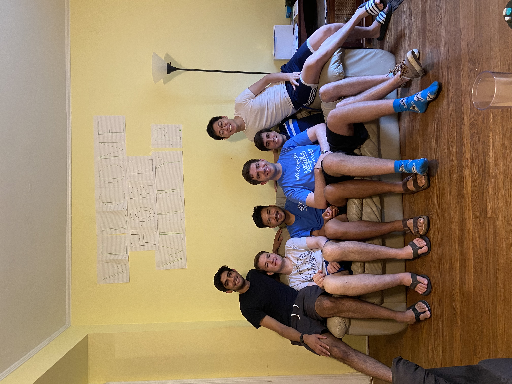

June 2020 - May 2021
1715 37th St NW
The undisputed pretty boy of the group 💄✨, Ashish combines his striking good looks with an unwavering sense of responsibility that keeps everyone grounded 🏗️. His passion for infrastructure runs deep - whether it's architecting scalable systems 🏛️, optimizing cloud deployments ☁️, or ensuring everything runs smoothly behind the scenes 🔧. Ashish has an eye for both aesthetic design 🎨 and robust engineering 💪, making him the perfect bridge between form and function. His meticulous attention to detail 🔍 and natural leadership qualities 👑 make him the go-to person when things need to get done right the first time ✅.
Kevin is the master of timing ⏰ - though not always in the way you'd expect. Known for his perfectly inappropriate jokes 😂 that somehow land at exactly the right moment, he has an uncanny ability to lighten the mood even in the most stressful situations 😌. His unique talent for contorting his appendages into bizarre and inexplicable shapes 🤸♂️ has become legendary among the team, often serving as impromptu entertainment during long coding sessions 🎭. Despite his quirky exterior, Kevin brings a refreshing perspective to problem-solving 💡 and isn't afraid to think outside the box 📦 - or twist his body outside of normal human limitations 🌀.
Will embodies the quintessential tech entrepreneur 💼 with impeccable taste that extends far beyond code. His palate for fine wines 🍷 is matched only by his encyclopedic knowledge of both vintage selections and emerging vineyards 🍇. When he's not debugging complex algorithms 🧮, you'll find him curating the perfect playlist 🎵 that somehow captures the exact mood of any situation. His appreciation for sophisticated company ✨ is legendary, and his ability to connect with people from all walks of life 🤝 makes him an invaluable networker. Will's refined sensibilities 🎩 and tech expertise 💻 create a unique combination that brings both class and innovation to every project 🚀.
Carson is the embodiment of Midwest values 🌽 and work ethic, delivering exactly what you'd hope for from someone raised in America's heartland 🇺🇸. His genuine friendliness 😊 isn't just surface-level politeness - it's rooted in a deep sense of community and helping others succeed 🤗. Whether it's staying late to help a teammate debug code 🌙💻, bringing homemade treats to share 🍪, or simply offering a listening ear during tough times 👂, Carson consistently goes above and beyond. His practical problem-solving approach 🔧 and steady demeanor make him the team's anchor ⚓, while his dry sense of humor 😏 and unexpected insights keep everyone on their toes 🦶.
Straight from Houston 🤠, Jayan brings Texas-sized passion to everything he does - but nothing gets him more fired up than the Houston Dynamo ⚽🔥. His encyclopedic knowledge of soccer statistics 📊, player transfers 🔄, and team history 📚 is matched only by his unwavering loyalty through both championship seasons 🏆 and rebuilding years 🔨. Jayan's enthusiasm is infectious 😄, whether he's explaining the finer points of a tactical formation 📐 or drawing parallels between team strategy on the pitch ⚽ and collaborative development workflows 💻. His Houston pride runs deep 💙, and he's always ready to defend his city's honor 🛡️ while bringing that same fierce dedication to every coding challenge 🚀.
Ziyue is the rare individual who seems to excel effortlessly at everything they touch ✨🏆. Their sharp intellect 🧠 and quick wit make complex problems look simple, while their athletic prowess 🏃♂️ serves as a reminder that there's life beyond the screen 🌟. Whether dominating in sports 🥇, cracking jokes that have the whole team in stitches 😂, or simply walking into a room and somehow making it brighter ☀️, Ziyue has that magnetic quality that draws people in 🧲. Their combination of technical brilliance 💡, physical coordination 🤸♂️, natural charm 😎, and genuine humor 😄 creates an almost unfair advantage in both professional and personal settings - but their humble nature 🙏 keeps everyone rooting for their continued success 🎯.